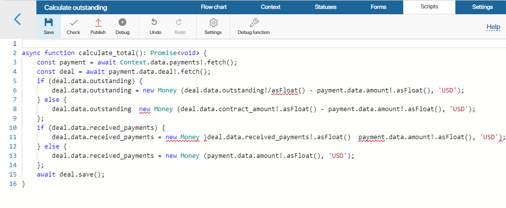

The Script activity is TypeScript code that allows you to access data in business process, create, request, modify, and delete app items, and exchange data with external systems using the HTTP protocol.
Let’s say a company sells products online on a website. When a customer clicks on the Buy button, a script launches a business process that receives information about the order placed on the website. The system automatically calculates the price of the product with a discount and then sends the data back to the website
Add the Script activity to the process
начало внимание
Only users included in the Administrators group can configure the Script activity.
конец внимание
On the process page, to the right of the modeling canvas, find the activities panel and open the Standard elements tab. Drag the Script activity to the process diagram and place it where required.

Please note that only two outgoing connectors can be applied to the Script activity. One connector for successful execution, the second, for when an error occurs while the script is running. If the number of connectors from the activity is exceeded, the process will not be published.
Double-click on the activity to open the settings window. It contains two tabs: General and Error Handling.
General tab
In the Name* field, specify the name of the operation as it will be shown in the system, for example, Calculate total amount.
In the Function field, you need to link a specific function to the activity. Functions previously added to the process are available in the drop-down list. If you need to create a new one, click Create. Specify the function’s name using English letters, numbers, and the underscore. The function’s name must begin with a letter. Click Create and then Open.
You will be redirected to the script editor in the business process designer. Here you can write scripts to work with the business process context. These scripts are executed on the server side, so access restrictions configured for app items are not applied. For example, if access to items in an app is restricted, an item that the current user doesn’t have access to can still be loaded; the server script will run successfully. If a script gets a list of an app’s items, all items in the app will be returned.
Scripts are written in the TypeScript programming language. To learn about the principles of script-writing in BRIX, please visit BRIX TS SDK.
начало внимание
Using Global or Namespace constants in scripts restricts the export of system components. Read more about it in the Global constants in scripts article.
конец внимание

In certain scripts, you can use additional parameters. They allow you to optimize some process operations or make changes to the script without republishing. Read more about this in the Additional parameters article.
Error Handling tab
During the execution of the process, a script error may occur, for example, BRIX cannot access an external service. You can define how the system should behave in this case.
To do this, click the Error Handling tab in the settings window.
- Retry. Select this option if you want the system to re-execute the script.
- Number of retries. This field indicates how many attempts to re-execute the script the system will make.
- Retry delay (sec). Determine the frequency of script retry attempts.
- Notification. Select this option if you want to inform specific users about the error. Specify the users to be notified of the script failure.
- Interrupt. In case of an error, the system will stop attempting to execute the script and direct the process to the selected connector.
When you configure the settings, click Save.
Found a typo? Select it and press Ctrl+Enter to send us feedback